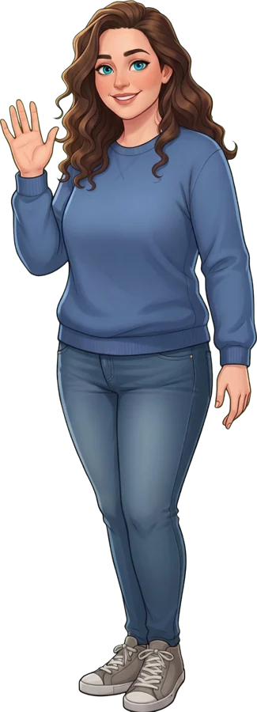
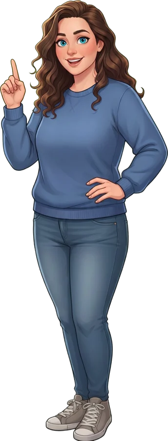
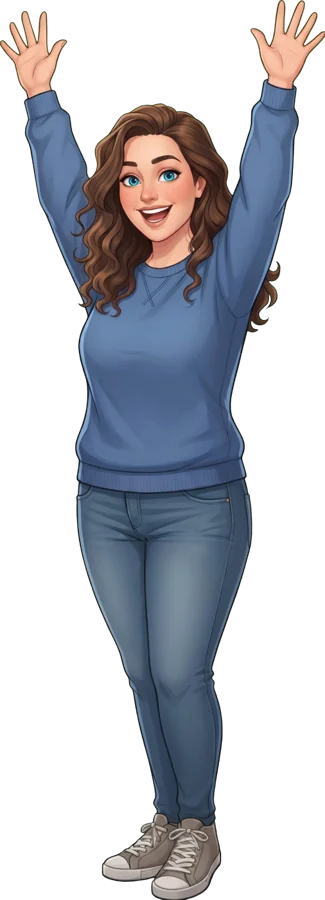
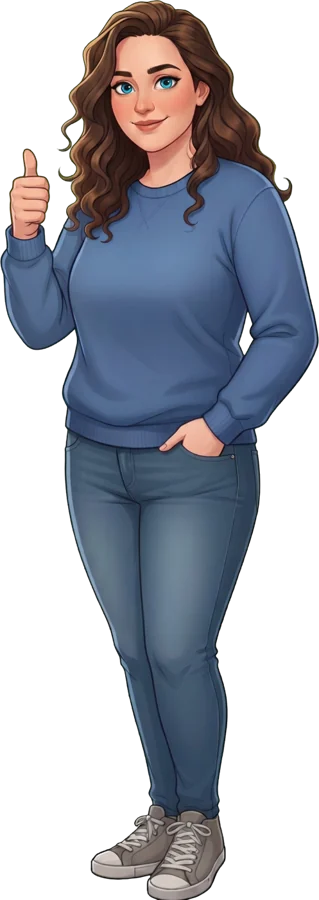

<!DOCTYPE html>
<html lang="it">
<head>
<meta charset="utf-8">
<meta name="viewport" content="width=device-width, initial-scale=1">
<title>Dopo le medie? Tre strade per te!</title>
<link rel="icon" href="img/logo.png">
<meta name="description" content="Il test gratuito per scoprire quali scuole ti somigliano. Un progetto Life School Family.">
<link rel="stylesheet" href="https://fonts.googleapis.com/css2?family=Outfit:wght@400;500;600;700;800&display=swap">
<style>
:root{--ink:#111111;--red:#E02424;--green:#008744;--blue:#4361EE;--lred:#FF3131;--lgreen:#00BF63;--lblue:#5170FF;--tint:#F3F5FF;--yellow:#FFF3BF}
*{box-sizing:border-box}
html,body{margin:0;background:#EEF0F7}
body{font-family:'Outfit',system-ui,-apple-system,'Segoe UI',sans-serif;color:var(--ink);font-size:16px;line-height:1.4;-webkit-text-size-adjust:100%}
#app{max-width:480px;margin:0 auto;min-height:100vh;background:#fff;padding:22px 20px 28px;display:flex;flex-direction:column;gap:16px}
h1,h2,h3,p{margin:0}
h1{font-size:36px;line-height:1.05;font-weight:800;letter-spacing:-.5px}
h2{font-size:22px;line-height:1.15;font-weight:800}
h3{font-size:16px;font-weight:800}
img{max-width:100%}
button{font-family:inherit;color:var(--ink);cursor:pointer}
button:focus-visible,a:focus-visible,summary:focus-visible{outline:3px solid var(--blue);outline-offset:3px}
a{color:var(--ink)}
.row{display:flex;align-items:center;gap:10px}
.between{justify-content:space-between}
.col{display:flex;flex-direction:column;gap:10px}
.grow{flex:1 1 auto}
.pill{border:2px solid var(--ink);border-radius:999px;padding:5px 12px;font-size:13px;font-weight:700;white-space:nowrap}
.bars{display:flex;gap:8px}
.bars i{width:64px;height:10px;border:2px solid var(--ink);border-radius:999px}
.card{border:3px solid var(--ink);border-radius:18px;padding:14px}
.shadow{box-shadow:4px 4px 0 var(--ink)}
.btn{min-height:56px;border:3px solid var(--ink);border-radius:16px;background:#fff;font-size:18px;font-weight:800;padding:8px 18px;display:inline-flex;align-items:center;justify-content:center;gap:8px;text-decoration:none;text-align:center}
.btn.go{background:var(--green);color:#fff;box-shadow:4px 4px 0 var(--ink);width:100%}
.btn.blue{background:var(--blue);color:#fff;box-shadow:4px 4px 0 var(--ink)}
.btn.small{min-height:46px;font-size:15px;border-width:2px;border-radius:999px;padding:4px 16px}
.btn[disabled],.btn.off{opacity:.45;cursor:not-allowed;box-shadow:none}
.listen{min-height:44px;border:2px solid var(--ink);border-radius:999px;background:#fff;font-size:14px;font-weight:700;padding:0 14px;display:inline-flex;align-items:center;gap:8px;align-self:flex-start}
.listen.on{background:var(--ink);color:#fff}
.round{width:48px;height:48px;border:3px solid var(--ink);border-radius:999px;background:var(--blue);display:inline-flex;align-items:center;justify-content:center;box-shadow:3px 3px 0 var(--ink);flex:0 0 auto}
.round.on{background:var(--ink)}
svg.ic{width:22px;height:22px;fill:none;stroke:currentColor;stroke-width:2.2;stroke-linecap:round;stroke-linejoin:round;flex:0 0 auto}
.small-note{font-size:12px;color:#333;text-align:center}
.hero{display:flex;align-items:flex-end;gap:10px}
.hero .avatar{width:38%;max-width:160px;flex:0 0 auto;max-height:340px;overflow:hidden}
.hero .avatar img{display:block;width:100%}
.bubble{background:var(--tint);flex:1 1 auto;align-self:flex-start;font-size:15px}
.bubble p+p{margin-top:8px}
.bubble .big{font-size:18px;font-weight:800}
.progress{height:14px;border:2px solid var(--ink);border-radius:999px;overflow:hidden;background:#fff}
.progress i{display:block;height:100%;background:var(--lgreen);border-right:2px solid var(--ink)}
.qtext{font-size:26px;line-height:1.15;font-weight:800;letter-spacing:-.3px}
.opts{display:flex;flex-direction:column;gap:12px}
.opt{width:100%;min-height:60px;display:flex;align-items:center;gap:12px;padding:10px 14px;text-align:left;background:#fff;border:3px solid var(--ink);border-radius:16px;font-size:17px;font-weight:600}
.opt .box{width:24px;height:24px;flex:0 0 auto;border:2px solid var(--ink);border-radius:8px;background:#fff;display:flex;align-items:center;justify-content:center;color:var(--blue)}
.opt .box svg{display:none;width:18px;height:18px;stroke-width:3.2}
.opt[aria-pressed="true"]{background:var(--blue);color:#fff;font-weight:700;box-shadow:4px 4px 0 var(--ink)}
.opt[aria-pressed="true"] .box svg{display:block}
.opt.single .box{border-radius:999px}
.more{align-self:center;border-style:dashed}
.strip{display:flex;align-items:center;justify-content:center;gap:8px;font-size:12px;color:#333;padding-top:4px}
.strip img{height:18px;width:auto}
.podium{display:flex;align-items:flex-end;gap:8px}
.step{flex:1 1 0;min-width:0;display:flex;flex-direction:column;align-items:center;gap:6px;text-align:center}
.step .circle{width:54px;height:54px;border:3px solid var(--ink);border-radius:999px;display:flex;align-items:center;justify-content:center;color:#fff}
.step .circle svg{width:28px;height:28px}
.step .nm{font-size:14px;line-height:1.15;font-weight:800}
.step .pc{font-size:21px;font-weight:800}
.step .block{width:100%;border:3px solid var(--ink);border-radius:14px 14px 0 0;color:#fff;font-weight:800;display:flex;align-items:center;justify-content:center}
.r1 .block{height:132px;font-size:52px;background:var(--red)}
.r2 .block{height:92px;font-size:40px;background:var(--green)}
.r3 .block{height:64px;font-size:34px;background:var(--blue)}
.phrase{background:var(--yellow);font-size:16px;font-weight:600}
details.profile{border:3px solid var(--ink);border-radius:18px;overflow:hidden}
details.profile summary{list-style:none;display:flex;align-items:center;gap:10px;padding:12px 14px;color:#fff;font-size:18px;font-weight:800;cursor:pointer;min-height:54px}
details.profile summary::-webkit-details-marker{display:none}
details.profile summary .num{width:30px;height:30px;border-radius:999px;background:#fff;color:var(--ink);display:flex;align-items:center;justify-content:center;font-size:16px;flex:0 0 auto}
details.profile summary .chev{transition:transform .15s}
details.profile[open] summary{border-bottom:3px solid var(--ink)}
details.profile[open] summary .chev{transform:rotate(180deg)}
details.k1 summary{background:var(--red)}details.k2 summary{background:var(--green)}details.k3 summary{background:var(--blue)}
.pbody{padding:14px;display:flex;flex-direction:column;gap:12px;font-size:15px}
.school{padding:10px 12px;border:2px solid #9aa0b4;border-radius:12px;font-size:14px;color:#333}
.school b{color:var(--ink)}
.school.hit{background:var(--tint);border-color:var(--ink);color:var(--ink);box-shadow:3px 3px 0 var(--ink)}
.school .tag{display:inline-block;font-size:11px;font-weight:800;text-transform:uppercase;letter-spacing:.4px;background:var(--ink);color:#fff;border-radius:999px;padding:2px 8px;margin-bottom:4px}
.kv{background:#fff;border:2px solid var(--ink);border-radius:12px;padding:10px 12px}
.meters{display:flex;flex-direction:column;gap:8px}
.meter{display:grid;grid-template-columns:minmax(0,1fr) 44px;gap:4px 8px;align-items:center;font-size:13px;font-weight:600}
.meter .track{grid-column:1/3;height:12px;border:2px solid var(--ink);border-radius:999px;overflow:hidden;background:#fff}
.meter .track i{display:block;height:100%}
.meter .v{text-align:right;font-weight:800}
.section{display:flex;flex-direction:column;gap:12px}
.parents{background:var(--tint)}
.links{display:flex;flex-wrap:wrap;gap:10px}
ol.todo{margin:0;padding-left:22px;display:flex;flex-direction:column;gap:6px}
.toast{position:fixed;left:50%;bottom:22px;transform:translateX(-50%);background:var(--ink);color:#fff;padding:12px 18px;border-radius:999px;font-size:14px;font-weight:700;max-width:90%;text-align:center;z-index:9}
.draft{font-size:12px;color:#7a4b00;background:#FFE9B8;border:1px dashed #7a4b00;border-radius:8px;padding:4px 8px}
.avatar-s{width:96px;max-height:170px;overflow:hidden;flex:0 0 auto}
.avatar-s img{width:100%;display:block}
@media (min-width:520px){#app{margin:18px auto;min-height:0;border:3px solid var(--ink);border-radius:26px;box-shadow:8px 8px 0 var(--ink)}}
@media print{html,body{background:#fff}#app{border:0;box-shadow:none;margin:0;max-width:none}.noprint{display:none!important}details.profile{break-inside:avoid}.toast{display:none}}
@media (prefers-reduced-motion:reduce){*{transition:none!important}}
</style>
</head>
<body>
<main id="app" aria-live="polite"></main>
<script src="data.js"></script>
<script src="links.js"></script>
<script src="audio/clips.js"></script>
<script>
(function(){
"use strict";
var D=LSF, C=D.config, app=document.getElementById('app');
var N=D.questions.length;
var S={screen:'welcome',i:0,qs:[],result:null,shared:false};
var IC={
 speak:'<path d="M4 10v4h3l5 4V6L7 10z"/><path d="M16 9a4 4 0 0 1 0 6"/><path d="M18.5 6.5a8 8 0 0 1 0 11"/>',
 stop:'<rect x="6" y="6" width="12" height="12" rx="2"/>',
 check:'<path d="M5 12l4 4 10-10"/>',plus:'<path d="M12 5v14"/><path d="M5 12h14"/>',
 chev:'<path d="M6 9l6 6 6-6"/>',share:'<path d="M12 15V4"/><path d="M8 8l4-4 4 4"/><path d="M5 13v6h14v-6"/>',
 print:'<path d="M12 4v11"/><path d="M8 11l4 4 4-4"/><path d="M5 19h14"/>',copy:'<rect x="8" y="8" width="12" height="12" rx="2"/><path d="M4 16V6a2 2 0 0 1 2-2h10"/>',
 again:'<path d="M4 12a8 8 0 1 0 3-6.2"/><path d="M4 4v5h5"/>'
};
function ic(n,cls){return '<svg class="ic '+(cls||'')+'" viewBox="0 0 24 24" aria-hidden="true">'+IC[n]+'</svg>';}
function esc(s){return String(s).replace(/&/g,'&amp;').replace(/</g,'&lt;').replace(/>/g,'&gt;').replace(/"/g,'&quot;');}
function shuffle(a){a=a.slice();for(var i=a.length-1;i>0;i--){var j=Math.floor(Math.random()*(i+1));var t=a[i];a[i]=a[j];a[j]=t;}return a;}

/* ---------- voce: i clip con la voce di Mary (cartella audio/, elenco in audio/clips.js).
   Se anche un solo clip di una lettura manca, quella lettura usa la voce del dispositivo. ---------- */
var synth=('speechSynthesis' in window)?window.speechSynthesis:null, speakingKey=null;
var HAVE=window.LSF_CLIPS||{}, player=null, playQueue=[], playTimer=null;
function stopSpeak(){try{if(synth)synth.cancel();}catch(e){}
  clearTimeout(playTimer);playQueue=[];
  if(player){try{player.pause();}catch(e){}player.onended=player.onerror=null;}
  speakingKey=null; markSpeak();}
function clipsReady(ids){if(!ids||!ids.length)return false;for(var i=0;i<ids.length;i++){if(!HAVE[ids[i]])return false;}return true;}
function playNext(key){
  if(speakingKey!==key)return;
  if(!playQueue.length){speakingKey=null;markSpeak();return;}
  var id=playQueue.shift();
  player.onended=function(){playTimer=setTimeout(function(){playNext(key);},280);};
  player.onerror=function(){playNext(key);};
  player.src='audio/'+id+'.mp3';
  var p=player.play();if(p&&p.catch)p.catch(function(){if(speakingKey===key){stopSpeak();}});
}
function speak(key,text){
  if(speakingKey===key){stopSpeak();return;}
  stopSpeak();
  var ids=CLIPS[key];
  if(clipsReady(ids)){
    if(!player){player=new Audio();player.preload='auto';}
    playQueue=ids.slice();speakingKey=key;markSpeak();playNext(key);return;}
  if(!synth)return toast('Su questo dispositivo la lettura a voce non è disponibile.');
  try{var u=new SpeechSynthesisUtterance(text);u.lang='it-IT';u.rate=.96;
    u.onend=u.onerror=function(){if(speakingKey===key){speakingKey=null;markSpeak();}};
    speakingKey=key;synth.speak(u);markSpeak();}catch(e){speakingKey=null;}
}
function markSpeak(){var bs=app.querySelectorAll('[data-speak]');for(var i=0;i<bs.length;i++){bs[i].classList.toggle('on',bs[i].getAttribute('data-speak')===speakingKey);}}
function listenBtn(key,label){return '<button type="button" class="listen noprint" data-act="speak" data-speak="'+key+'">'+ic('speak')+esc(label||'Ascolta')+'</button>';}
var SPEECH={}, CLIPS={};
function qid(i){return 'q'+(i<9?'0':'')+(i+1);}

/* ---------- toast ---------- */
var toastT=null;
function toast(msg){var o=document.querySelector('.toast');if(o)o.remove();var t=document.createElement('div');t.className='toast';t.setAttribute('role','status');t.textContent=msg;document.body.appendChild(t);clearTimeout(toastT);toastT=setTimeout(function(){t.remove();},3600);}

/* ---------- schermate ---------- */
function header(){return '<div class="row between"><span class="pill">Gratis · 10 minuti</span></div>';}
function strip(){return '<div class="strip"><span>Un progetto</span></div>';}

function viewWelcome(){
  SPEECH.welcome=D.text.welcome.join(' ')+' Ci siamo? Si parte!';CLIPS.welcome=['welcome'];
  var t=D.text.welcome;
  return header()+
  '<div class="col"><h1>Dopo le medie?<br>Tre strade per te!</h1>'+
  '<div class="bars" aria-hidden="true"><i style="background:var(--lred)"></i><i style="background:var(--lgreen)"></i><i style="background:var(--lblue)"></i></div>'+
  '<p style="font-size:17px;font-weight:500">Il test gratuito per scoprire quali scuole ti somigliano</p></div>'+
  '<div class="hero"><div class="avatar"></div>'+
  '<div class="card shadow bubble"><p class="big">'+esc(t[0])+'</p><p>'+esc(t[1])+'</p><p>'+esc(t[2])+'</p></div></div>'+
  '<div class="card col" style="font-size:15px"><p>'+esc(t[3])+'</p><p>'+esc(t[4])+' '+esc(t[5])+'</p><p>'+esc(t[6])+'</p><p><b>'+esc(t[7])+'</b></p>'+listenBtn('welcome')+'</div>'+
  '<button type="button" class="btn go" data-act="howto">Ci siamo? Si parte!</button>'+
  '<p class="small-note">Il test è gratuito e non raccoglie i tuoi dati.<br>Un progetto Life School Family.</p>';
}
function viewHowto(){
  SPEECH.howto=D.text.howto.join(' ');CLIPS.howto=['howto'];
  var h='<div class="row between"><h1 style="font-size:32px">Come funziona</h1><div class="avatar-s"></div></div><div class="card shadow col bubble">';
  D.text.howto.forEach(function(p){h+='<p>'+esc(p)+'</p>';});
  h+=listenBtn('howto')+'</div><div class="grow"></div><button type="button" class="btn go" data-act="start">Ho capito, partiamo</button>'+strip();
  return h;
}
function initQ(i){
  var q=D.questions[i], idx=q.o.map(function(_,k){return k;});
  if(q.s){var neutral=idx.filter(function(k){return q.o[k][1]==='X';}), rest=idx.filter(function(k){return q.o[k][1]!=='X';});
    return {order:shuffle(rest).concat(neutral),shown:idx.length,sel:[]};}
  return {order:shuffle(idx),shown:idx.length,sel:[]};
}
function viewQuestion(){
  var i=S.i,q=D.questions[i],st=S.qs[i]||(S.qs[i]=initQ(i)),single=!!q.s,max=single?1:3;
  var hint=single?'Scegli una sola risposta.':'Scegli fino a tre risposte che senti vere.', hintId=single?'scegli-una':'scegli-tre';
  var said=[q.q,hint], clips=[qid(i)]; if(HAVE[hintId])clips.push(hintId);
  var h='<div class="col"><div class="row between"><p style="font-size:15px;font-weight:700">Domanda '+(i+1)+' di '+N+'</p>'+
    '<button type="button" class="round noprint" data-act="speak" data-speak="q" aria-label="Ascolta la domanda e le risposte" style="color:#fff">'+ic('speak')+'</button></div>'+
    '<div class="progress" role="img" aria-label="Avanzamento: domanda '+(i+1)+' di '+N+'"><i style="width:'+Math.round((i+1)/N*100)+'%"></i></div></div>'+
    '<h1 class="qtext">'+esc(q.q)+'</h1>'+
    '<div class="row between"><p style="font-size:14px;font-weight:500">'+(single?'Scegli una sola risposta':'Scegli fino a 3 risposte che senti vere')+'</p>'+
    (single?'':'<span class="pill">'+st.sel.length+' di 3</span>')+'</div><div class="opts">';
  for(var k=0;k<st.shown;k++){var oi=st.order[k],on=st.sel.indexOf(oi)>=0;said.push(q.o[oi][0]);clips.push(qid(i)+'o'+(oi+1));
    h+='<button type="button" class="opt'+(single?' single':'')+'" aria-pressed="'+on+'" data-act="pick" data-o="'+oi+'"><span class="box">'+ic('check')+'</span><span>'+esc(q.o[oi][0])+'</span></button>';}
  h+='</div>';
  if(!single&&st.shown<q.o.length)h+='<button type="button" class="btn small more" data-act="more">'+ic('plus')+'Altre risposte</button>';
  SPEECH.q=said.join(' ... ');CLIPS.q=clips;
  h+='<div class="grow"></div><div class="row"><button type="button" class="btn" data-act="back">Indietro</button>'+
    '<button type="button" class="btn go" data-act="next"'+(st.sel.length?'':' disabled')+'>'+(i===N-1?'Vedi il tuo podio':'Avanti')+'</button></div>'+strip();
  return h;
}

/* ---------- calcolo ---------- */
function compute(){
  var prop={},ch={},sty={L:0,M:0,F:0},q28='X';
  D.areaOrder.forEach(function(a){prop[a]=0;ch[a]=0;});
  D.questions.forEach(function(q,i){var st=S.qs[i];if(!st)return;
    if(q.s){st.sel.forEach(function(oi){var c=q.o[oi][1];if(sty[c]!==undefined)sty[c]++;if(i===N-1)q28=c;});return;}
    for(var k=0;k<st.shown;k++){prop[q.o[st.order[k]][1]]++;}
    st.sel.forEach(function(oi){ch[q.o[oi][1]]++;});});
  var pct={};D.areaOrder.forEach(function(a){pct[a]=prop[a]>=3?Math.round(ch[a]/prop[a]*100):0;});
  var mx=Math.max(sty.L,sty.M,sty.F),styles=mx===0?[]:['L','M','F'].filter(function(c){return sty[c]===mx;});
  if(styles.length===3)styles=[];
  return {pct:pct,ch:ch,styles:styles,q28:q28};
}
function podium(pct,ch){
  var list=D.areaOrder.map(function(a,n){return {a:a,p:pct[a],c:ch?ch[a]:0,n:n};});
  list.sort(function(x,y){return y.p-x.p||y.c-x.c||x.n-y.n;});
  var out=[],rank=0,last=null;
  for(var i=0;i<list.length;i++){if(list[i].p!==last){rank=out.length+1;last=list[i].p;}
    if(rank>3||out.length>=4)break;out.push({a:list[i].a,p:list[i].p,r:rank});}
  if(out.length>3&&out[3].r>3)out.pop();
  /* i gradini sono sempre 1,2,3 anche con pari merito */
  var seen=[];out.forEach(function(o){if(seen.indexOf(o.r)<0)seen.push(o.r);});
  out.forEach(function(o){o.k=seen.indexOf(o.r)+1;});
  return out;
}
function phraseKey(pod){var fs=[];pod.forEach(function(o){var f=D.families[o.a];if(fs.indexOf(f)<0)fs.push(f);});
  var key=['C','F','E','I'].filter(function(f){return fs.indexOf(f)>=0;}).join('');return D.phrases[key]?key:'CFEI';}
function phraseFor(pod){return D.phrases[phraseKey(pod)];}

/* ---------- risultato ---------- */
function encode(r){var s='';D.areaOrder.forEach(function(a){var v=Math.max(0,Math.min(r.pct[a],100)).toString(36);s+=(v.length<2?'0':'')+v;});
  return 'podio-'+s+'-'+(r.styles.join('')||'X')+r.q28;}
function decode(h){var m=/^#?podio-([0-9a-z]{22})-([LMF]{1,2}|X)([LMFX])$/.exec(h||'');if(!m)return null;
  var pct={};D.areaOrder.forEach(function(a,i){pct[a]=Math.min(parseInt(m[1].substr(i*2,2),36)||0,100);});
  return {pct:pct,ch:null,styles:m[2]==='X'?[]:m[2].split(''),q28:m[3]};}
function link(url,label,cls){return url?'<a class="btn small '+(cls||'')+'" href="'+esc(url)+'" target="_blank" rel="noopener">'+esc(label)+'</a>':(C.draft?'<span class="btn small off" aria-disabled="true">'+esc(label)+' <span class="draft">link da inserire</span></span>':'');}
function resultText(r,pod){var t='Dopo le medie? Tre strade per te!\nIl mio podio:\n';
  pod.forEach(function(o){t+=o.k+'. '+D.areas[o.a].name+' ('+o.p+'%)\n';});
  if(r.styles.length)t+='Come imparo meglio: '+r.styles.map(function(c){return D.styles[c].name.toLowerCase();}).join(' e ')+'\n';
  t+='\nFai anche tu il test gratuito di Life School Family'+(C.testUrl?': '+C.testUrl:'.');return t;}
function viewResult(){
  var r=S.result,pod=podium(r.pct,r.ch),phrase=phraseFor(pod);
  var names=pod.map(function(o){return D.areas[o.a].name;});
  SPEECH.podio='Sul tuo podio ci sono: '+names.join(', ')+'. '+phrase;
  CLIPS.podio=['podio-intro'].concat(pod.map(function(o){return 'nome-'+o.a;}),['frase-'+phraseKey(pod)]);
  var h=(S.shared?'<div class="card col noprint" style="background:var(--yellow)"><p style="font-weight:700">Questo è un podio già fatto, aperto da un link.</p><button type="button" class="btn go" data-act="again">Fai il test dall\'inizio</button></div>':'')+'<div class="row" style="align-items:flex-start"><div class="col grow" style="padding-top:22px"><h1>'+(S.shared?'Il podio':'Il tuo podio')+'</h1><p style="font-weight:500">Ecco le '+(pod.length===4?'quattro':'tre')+' strade che ti somigliano di più.</p></div>'+
    '<div class="avatar-s"></div></div>';
  /* podio: con tre gradini distinti l\'ordine è 2-1-3 */
  var disp=pod.slice();if(pod.length===3&&pod[0].k===1&&pod[1].k===2&&pod[2].k===3)disp=[pod[1],pod[0],pod[2]];
  h+='<div class="podium">';
  disp.forEach(function(o){var A=D.areas[o.a];
    h+='<div class="step r'+o.k+'"><div class="circle" style="background:'+A.color+'"><svg class="ic" viewBox="0 0 24 24" aria-hidden="true">'+A.icon+'</svg></div><p class="nm">'+esc(A.name)+'</p><p class="pc">'+o.p+'%</p><div class="block">'+o.k+'</div></div>';});
  h+='</div><div class="card shadow phrase col"><p>'+esc(phrase)+'</p>'+listenBtn('podio')+'</div>';
  /* profili */
  h+='<div class="section">';
  pod.forEach(function(o,n){var A=D.areas[o.a];
    SPEECH['p'+n]=A.name+'. '+A.open+' '+A.about+' Una cosa da provare subito. '+A.tryit+' Una domanda da fare all\'open day. '+A.ask;
    CLIPS['p'+n]=['profilo-'+o.a];
    h+='<details class="profile k'+o.k+'"'+(n===0?' open':'')+'><summary><span class="num">'+o.k+'</span><span class="grow">'+esc(A.name)+'</span>'+ic('chev','chev')+'</summary><div class="pbody">'+
      '<p style="font-size:16px;font-weight:700">'+esc(A.open)+'</p><div><h3>Cosa dice di te</h3><p>'+esc(A.about)+'</p></div><div class="col"><h3>Le scuole da andare a vedere</h3>';
    A.schools.forEach(function(s){var hit=s[0]&&r.styles.indexOf(s[0])>=0;
      h+='<p class="school'+(hit?' hit':'')+'">'+(hit?'<span class="tag">La più vicina a come impari</span><br>':'')+'<b>'+esc(s[1])+':</b> '+esc(s[2])+'</p>';});
    h+='</div><div class="kv"><h3>Una cosa da provare subito</h3><p>'+esc(A.tryit)+'</p></div><div class="kv"><h3>Una domanda da fare all\'open day</h3><p>"'+esc(A.ask)+'"</p></div>'+listenBtn('p'+n)+'</div></details>';});
  h+='</div>';
  /* modo di imparare */
  var codes=r.styles.length?r.styles:['X'];
  h+='<div class="section"><h2>Come impari meglio</h2>';
  codes.forEach(function(c){var st=D.styles[c];h+='<div class="card col"><h3>'+esc(st.name)+'</h3>';st.text.forEach(function(p){h+='<p>'+esc(p)+'</p>';});
    if(st.row)h+='<p>Nei tuoi profili, guarda per prima la riga "'+esc(st.row)+'".</p>';h+='</div>';});
  h+='<p style="font-weight:700">Nessun modo vale più degli altri. Sono strade diverse, e tutte portano lontano.</p></div>';
  /* 4+2 */
  var openShort=(r.q28==='M'||r.q28==='F');
  h+='<details class="card"'+(openShort?' open':'')+'><summary style="font-weight:800;font-size:17px;cursor:pointer">'+(openShort?'Due strade in più, se vuoi arrivare prima al lavoro':'Esistono anche percorsi più brevi')+'</summary><div class="col" style="margin-top:12px;font-size:15px">'+
    '<h3>Il percorso 4+2</h3><p>Quattro anni di scuola superiore invece di cinque, e poi due anni in una ITS Academy.</p><p>Le ITS Academy sono scuole di specializzazione legate alle aziende: tanta pratica, tirocini veri, tecnologie aggiornate.</p><p>Dopo i quattro anni hai comunque il diploma, quindi puoi anche cambiare idea e fare altro.</p><p>Non tutte le scuole lo offrono: chiedi quali ci sono vicino a te.</p>'+
    '<h3>I percorsi regionali (IeFP)</h3><p>Durano tre anni e ti danno una qualifica professionale. Con un quarto anno arrivi al diploma professionale.</p><p>Si impara un mestiere fin dal primo giorno, con molte ore in laboratorio e in azienda.</p><p>Li organizza la Regione, quindi cambiano da una zona all\'altra.</p>'+
    '<p style="font-weight:700">Sono strade vere, non scorciatoie. E in tutte e due, se un giorno vuoi continuare a studiare, il modo c\'è.</p><div class="noprint">'+link(C.cercaScuole,'Come cercare le scuole vicino a me')+'</div></div></details>';
  /* tutte le aree */
  h+='<div class="section"><h2>Tutte le tue aree</h2><div class="meters">';
  D.areaOrder.slice().sort(function(a,b){return r.pct[b]-r.pct[a];}).forEach(function(a){var A=D.areas[a];
    h+='<div class="meter"><span>'+esc(A.name)+'</span><span class="v">'+r.pct[a]+'%</span><div class="track"><i style="width:'+r.pct[a]+'%;background:'+A.color+'"></i></div></div>';});
  h+='</div></div>';
  /* azioni */
  h+='<div class="section noprint"><h2>Tieni il tuo risultato</h2><div class="row" style="flex-wrap:wrap"><button type="button" class="btn blue grow" data-act="share">'+ic('share')+'Condividi</button><button type="button" class="btn grow" data-act="print">'+ic('print')+'Salva o stampa</button></div>'+
    '<div class="row" style="flex-wrap:wrap"><button type="button" class="btn small" data-act="copy">'+ic('copy')+'Copia il risultato</button>'+(C.testUrl?'<button type="button" class="btn small" data-act="link">'+ic('copy')+'Copia il link al mio podio</button>':'')+'<button type="button" class="btn small" data-act="again">'+ic('again')+'Rifai il test</button></div></div>';
  /* genitori */
  h+='<div class="card parents section"><div class="row between"><h2>Per i genitori</h2><div class="avatar-s" style="width:70px;max-height:110px"></div></div>'+
    '<p>Questo podio non è un verdetto. È un punto di partenza per parlarne in famiglia.</p><p>Le tre aree indicano che cosa attira di più oggi chi ha fatto il test. A dodici o tredici anni gli interessi cambiano, ed è normale.</p>'+
    '<h3>Tre cose da fare adesso</h3><ol class="todo"><li>Chiedete: "Ti ci ritrovi?" E ascoltate la risposta, anche se vi sorprende.</li><li>Scegliete insieme due o tre scuole da visitare tra quelle indicate nei profili.</li><li>Rifate il test tra qualche mese, e confrontate i due podi.</li></ol>'+
    ((C.draft||C.newsletter)?'<div class="card col" style="background:#fff"><h3>Come accompagnare la scelta, senza scegliere al posto loro</h3><p>Come leggere il podio, che cosa chiedere agli open day, gli errori più comuni. La ricevete iscrivendovi alla newsletter di Life School Family.</p><div class="noprint">'+link(C.newsletter,'Voglio la guida','blue')+'</div></div>':'')+
    ((C.draft||C.prenota)?'<div class="card col" style="background:#fff"><h3>Parliamone insieme</h3><p>Un colloquio educativo online per leggere il podio con chi ha fatto il test e con almeno un genitore, e capire quali passi fare.</p><p>Primo colloquio, 20 minuti: <b>'+esc(C.prezzo20)+'</b><br>Colloquio completo, 45 minuti: <b>'+esc(C.prezzo45)+'</b></p><p>Con il codice <b>'+esc(C.codice)+'</b>, valido 30 giorni, il prezzo è ridotto.</p><div class="noprint">'+link(C.prenota,'Prenota un colloquio','blue')+'</div></div>':'')+
    '<div class="col"><h3>Chi è Mary</h3>';
  D.text.mary.forEach(function(p){h+='<p style="font-size:15px">'+esc(p)+'</p>';});
  h+='</div><div class="col noprint"><h3>Per continuare a seguirci</h3><div class="links">'+link(C.instagram,'Instagram')+link(C.blog,'Blog')+link(C.eduki,'Materiali su Eduki')+link(C.edudoro,'Materiali su Edudoro')+link(C.gratis,'Materiali gratuiti')+link(C.libro1,C.libro1nome||'Libri su Amazon')+link(C.libro2,C.libro2nome||'')+'</div></div>'+
    '<p class="small-note" style="text-align:left">Questo test è uno strumento educativo di orientamento. Non è una valutazione psicologica e non sostituisce il consiglio di chi insegna.</p></div>'+strip();
  return h;
}

/* ---------- motore ---------- */
function render(focusTop){
  stopSpeak();
  var v=S.screen==='welcome'?viewWelcome():S.screen==='howto'?viewHowto():S.screen==='q'?viewQuestion():viewResult();
  app.innerHTML=v;
  if(focusTop){try{window.scrollTo(0,0);}catch(e){}}
}
function setHash(h){try{if(history&&history.replaceState)history.replaceState(null,'',h?('#'+h):location.pathname+location.search);else location.hash=h||'';}catch(e){try{location.hash=h||'';}catch(e2){}}}
function act(a,el){
  if(a==='speak'){var k=el.getAttribute('data-speak');speak(k,SPEECH[k]||'');return;}
  if(a==='howto'){S.screen='howto';return render(true);}
  if(a==='start'){S.screen='q';S.i=0;return render(true);}
  if(a==='pick'){var q=D.questions[S.i],st=S.qs[S.i],oi=parseInt(el.getAttribute('data-o'),10),p=st.sel.indexOf(oi);
    if(q.s){st.sel=[oi];}else if(p>=0){st.sel.splice(p,1);}else if(st.sel.length>=3){return toast('Ne hai già scelte tre. Togline una per cambiarla.');}else{st.sel.push(oi);}
    var y=window.pageYOffset;render(false);try{window.scrollTo(0,y);}catch(e){}return;}
  if(a==='more'){S.qs[S.i].shown=D.questions[S.i].o.length;var y2=window.pageYOffset;render(false);try{window.scrollTo(0,y2);}catch(e){}return;}
  if(a==='back'){if(S.i===0){S.screen='howto';}else{S.i--;}return render(true);}
  if(a==='next'){if(!S.qs[S.i].sel.length)return;if(S.i<N-1){S.i++;return render(true);}
    S.result=compute();S.shared=false;S.screen='result';return render(true);}
  if(a==='again'){S={screen:'welcome',i:0,qs:[],result:null,shared:false};setHash('');return render(true);}
  if(a==='link'){var base=C.testUrl||String(location.href).split('#')[0];return copyText(base+'#'+encode(S.result),'Link al tuo podio copiato.');}
  var r=S.result,pod=r?podium(r.pct,r.ch):[],txt=r?resultText(r,pod):'';
  if(a==='copy'){return copyText(txt,'Risultato copiato: ora puoi incollarlo dove vuoi.');}
  if(a==='share'){if(navigator.share){try{navigator.share({title:'Dopo le medie? Tre strade per te!',text:txt}).catch(function(){copyText(txt,'Risultato copiato: incollalo in un messaggio.');});return;}catch(e){}}
    return copyText(txt,'Risultato copiato: incollalo in un messaggio.');}
  if(a==='print'){var ds=app.querySelectorAll('details');for(var i=0;i<ds.length;i++)ds[i].open=true;try{window.print();}catch(e){}
    toast('Se la stampa non parte, usa "Stampa" dal menu del browser.');return;}
}
function copyText(t,ok){function fb(){var ta=document.createElement('textarea');ta.value=t;ta.style.position='fixed';ta.style.opacity='0';document.body.appendChild(ta);ta.select();var done=false;try{done=document.execCommand('copy');}catch(e){}ta.remove();toast(done?ok:'Non riesco a copiare da qui: seleziona il testo a mano.');}
  try{if(navigator.clipboard&&navigator.clipboard.writeText){navigator.clipboard.writeText(t).then(function(){toast(ok);},fb);}else fb();}catch(e){fb();}}
app.addEventListener('click',function(e){var el=e.target.closest?e.target.closest('[data-act]'):null;if(!el||el.disabled)return;act(el.getAttribute('data-act'),el);});
function fromHash(){var r=decode(location.hash);if(r){S.result=r;S.shared=true;S.screen='result';render(true);return true;}return false;}
window.addEventListener('hashchange',function(){if(!fromHash()&&S.screen==='result'&&!location.hash){/* resta dove sei */}});
if(!fromHash())render(false);
window.LSF_TEST={S:S,compute:compute,podium:podium,phraseFor:phraseFor,encode:encode,decode:decode};
})();
</script>
</body>
</html>
